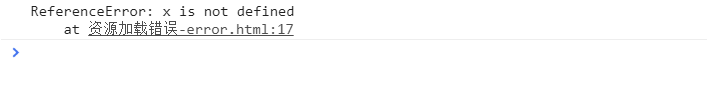

1. 为了保证产品的质量
2. 有些问题只存在于线上特定的环境
3. 后端错误有监控,前端错误没有监控
前端错误分为两类: 即时运行错误和资源加载错误
即时运行错误的捕获方式分为两类
通过try...catch我们能够知道出错的信息,并且也有堆栈信息可以知道在哪个文件第几行第几列发生错误

try {
// 代码段
} catch (err) {
console.log(err.message)
}缺点:
关于第一个缺点，我们没有任何解决办法，但是一般语法阶段我们是能在开发阶段/或者用工具检测到的，于是乎它就被忽略了
第二个缺点应该怎么理解呢? try...catch只能捕捉到当前执行流里边的运行错误,对于异步回调来说,是不属于这个try...catch块的
全局捕获。window.onerror一样可以拿到出错的信息以及文件名、行号、列号等信息,还可以在window.onerror最后return true让浏览器不输出错误信息到控制台
/*
* @param msg{String}：错误消息
* @param url{String}：引发错误的脚本的URL
* @param line{Number}：发生错误的代码行
* @param colunm{Number}：发生错误的代码列
* @param error{object}：错误对象
*/
window.onerror = function (msg, url, line, colunm, error) {
// 返回 true 则错误消息不显示在控制台，返回 false，则错误消息将会展示在控制台
return true;
}最后window.onerror的实现方法
window.onerror = function (msg, url, line, col, error) {
//没有URL不上报！上报也不知道错误
if (msg != "Script error." && !url) {
return true;
}
setTimeout(function () {
var data = {};
//不一定所有浏览器都支持col参数
col = col || (window.event && window.event.errorCharacter) || 0;
data.url = url;
data.line = line;
data.col = col;
if (!!error && !!error.stack) {
//如果浏览器有堆栈信息
//直接使用
data.msg = error.stack.toString();
} else if (!!arguments.callee) {
//尝试通过callee拿堆栈信息
var ext = [];
var f = arguments.callee.caller,
c = 3;
//这里只拿三层堆栈信息
while (f && (--c > 0)) {
ext.push(f.toString());
if (f === f.caller) {
break; //如果有环
}
f = f.caller;
}
ext = ext.join(",");
data.msg = ext;
}
//把data上报到后台！
console.log(data)
}, 0);
return true;
};img、script标签都可以添加onerror事件,当资源请求失败的时候,都会触发该事件
var img = document.getElementById('img');
img.onerror=function(){
console.log("出错啦");
}
performance是h5的新特性之一,使用该方法能获取到当前页面已经加载到的资源,返回的是一个数组对象。下面给出一个例子
获取页面中没有成功加载的图片资源?
步骤一:通过performance.getEntries()获取已经加载了的图片资源
let arr = [],
reg = (/\.jpg$|\.jpeg$|.png$|\.gif$/i);
performance.getEntries().forEach(item => {
if (reg.test(item.name)) {
arr.push(item.name)
}
})步骤二:获取页面中所有的img标签
let imgList=document.getElementByTagname('img')步骤三:利用获取到的img的长度减去已经加载到的长度,如果大于0的部分,就是加载失败的
let arr = [],
imgList=null,
num=0,
reg = (/\.jpg$|\.jpeg$|.png$|\.gif$/i);
performance.getEntries().forEach(item => {
if (reg.test(item.name)) {
arr.push(item.name)
}
})
imgList=document.getElementsByTagName('img');
num=imgList.length-arr.length;资源加载错误，虽然会阻止冒泡，但是不会阻止捕获。true:捕获，false:冒泡
// window.addEventListener第三个参数是true的时候是捕获的过程,false是冒泡的过程
window.addEventListener('error',function(e){
console.log("捕获",e)
},true)
为了提升web性能,大部分web产品都有CDN部署,将资源部署到不同的域名上,但是我们都知道浏览器是有同源策略的,当加载不同域名的脚本发生错误时,语法错误的细节不会报告,仅返回"Script error",针对这种问题,可以在服务器上设置"Access-Control-Allow-Origin:*",在请求资源的script标签上加上crossorigin属性即可
<script src="xxxx/js/store.js" crossorigin></script>